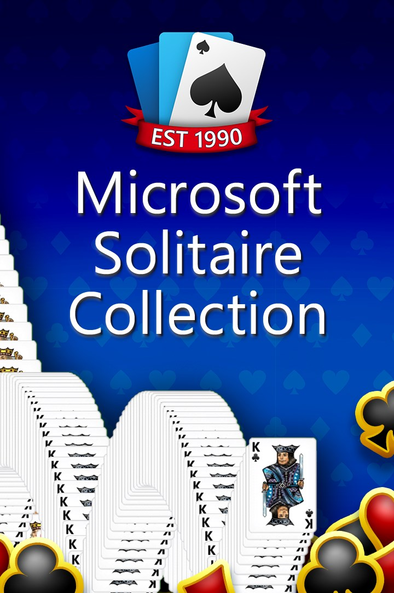

Microsoft Solitaire Collection
Microsoft Solitaire Collection
Details
|  | |
| Playtime | Not Played |
| Last Activity | 10/28/2018 3:02:59 |
| Added | 4/24/2025 1:30:35 |
| Modified | 5/7/2025 5:15:53 |
| Completion Status | Not Played |
| Library | Xbox |
| Source | Xbox |
| Platform | $PC (Windows) |
| Release Date | 10/26/2012 |
| Community Score | 70 |
| Critic Score | |
| User Score | |
| Genre | Card/tile |
| Developer | Arkadium Smoking Gun Interactive |
| Publisher | Xbox Game Studios |
| Feature | Cloud Saves Single Player Touchscreen optimised |
| Links | PCGamingWiki Official site HowLongToBeat IGDB MobyGames Wikipedia |
| Tag | Flip screen Point and select Real-Time Top-down view |
Description
Microsoft Solitaire Collection is a video game developed by Microsoft Casual Games and published by Xbox Game Studios for Microsoft Windows. It combines the Solitaire, FreeCell and Spider Solitaire titles that were included with previous versions of Windows. It also introduces Pyramid and TriPeaks to Windows for the first time, as well as new daily challenges and themes (though an older version of Pyramid was previously bundled in Microsoft Entertainment Pack 2 under the name "Tut's Tomb", and an older version of TriPeaks was previously bundled in Microsoft Entertainment Pack 3; both made the cut for Microsoft Entertainment Pack). Unlike the games included in Windows 7 and earlier versions, Microsoft Solitaire Collection is freemium adware with Xbox Live integration.
The app's hub-based design was originally inspired by the design for Windows 8's Start screen in 2012. At the time, the developers considered the game a tool for helping users become more familiar with Windows 8. Unlike its predecessors, Microsoft Solitaire Collection is updated via the Microsoft Store and communicates with a Microsoft server in order to track achievements and offer daily challenges.
Overview
Microsoft Solitaire Collection, designed by Microsoft Studios and developed by Smoking Gun Interactive (formerly Arkadium and Next Level Games), includes Klondike (classic Solitaire), Spider, FreeCell, Pyramid, and TriPeaks game modes, as well as daily challenges. The default theme is similar to the default theme for card games in Windows Vista and 7, but the other themes are different. It is also possible for users to create their own custom themes. Other new features include in-game music, cloud syncing, and Xbox Live integration. The hidden debug menu from classic card apps is no longer present, and the drop-down menus have been replaced with a universal hamburger menu and in-game hint and undo buttons at the bottom of the screen. (The Windows 8 version used the hidden Charms bar instead of the visible hamburger menu.)
When a player wins a game, the game will randomly select a card animation based on animations from previous versions of Windows card games. The app has a dedicated page for statistics on Klondike, Spider, FreeCell, Pyramid, TriPeaks, Daily Challenge, and Star Club.
Microsoft Solitaire Collection was first made available for free download in Windows 8's Windows Store. Despite solitaire games previously being included in Windows for free since 1990, they were not included in Windows 8 or Windows 8.1 and were uninstalled during upgrades from previous systems. Instead, Microsoft produced the advertising-supported Microsoft Solitaire Collection that users could download through the Windows Store. As a Windows Runtime app, it ran in fullscreen or in Windows 8's snapped mode, so it was designed to run in a variety of horizontal sizes but always stretch vertically across the entire screen.
The Windows 10 version was introduced to Windows 10 beta testers preinstalled with the system in build 10061, in time to celebrate the 25th anniversary of Microsoft Solitaire. Some customization features were not included until after the initial public release of Windows 10. The developers noted the delay was due to major code changes that happened during the development of Windows 10. The Windows 10 version was designed to scale dynamically both vertically and horizontally. The main page's layout was rearranged to use vertical scrolling rather than horizontal scrolling.
Since the original "Microsoft Solitaire" was Klondike solitaire but did not use the Klondike branding, some users were unaware it was Klondike. The Microsoft Casual Games team reportedly received frequent feedback to "Bring back the game mode from Windows 7" even though they already did. To address user confusion and help users find this game, the developers replaced the large polar bear on the Klondike tile with a Klondike deck and the words "Classic Solitaire".
Microsoft Solitaire Collection was made available for iOS and Android in August 2016 to beta testers in the Microsoft Casual Games Inner Circle. It was made publicly available on these platforms on November 23, 2016. Most iOS solitaire apps are integrated with Apple's Game Center, but this one is exclusively integrated into Microsoft's ecosystem. Since these versions integrate directly with the cloud service, it is not necessary to have the Xbox app installed on an iOS or Android device in order to sync data and achievements.
On the same day, a news bulletin launched from the app into a web browser announced that the Events feature would be publicly available in December 2016.
Advertisement controversy
The five basic game modes contain ads, displayed at the end of each game, and there are new features added in Windows 8 (Daily Challenges and Star Club) where users will see interstitial video ads roughly every 15 minutes, but only between games. Users can optionally pay $1.49/month or $9.99/year to get the Premium Edition of the game, which removes all advertisements, gives double coins for completing Daily Challenges and gives some bonuses in the basic TriPeaks and Pyramid game modes. Users who downloaded the iOS or Android app between November 23 and December 31, 2016, were given a month of Premium on that iOS or Android device.
Gizmodo characterized the change as a way to "nickel and dime" users, writing that "something which used to come on your PC for free is now corrupted by ad buys." PC Gamer wrote: "The ads in question aren't small banners that appear at the bottom of the screen while you play. They run over the full Solitaire window, some for 15 seconds and some for 30 seconds, and while they don't seem to pop up very often ... they can't be aborted." The Telegraph wrote that users are in "disbelief" that they would have to pay to play a game without being "interrupted by a slew of adverts." Rock, Paper, Shotgun said that the changes are a "particularly heartbreaking sign of the times" and that some users would find it "profoundly sinister" that "a large corporation is gathering and storing vast amounts of data on your computing habits, and not simply what you do in a browser."
There are also in-app links to play or download other ad-supported Microsoft-branded games, including Microsoft Mahjong and Microsoft Minesweeper.
On August 3, 2021, Microsoft announced that the Premium Edition of the game would be added to their PC Game Pass subscription service (then known as Xbox Game Pass for PC) on August 17, 2021.
Daily Challenges, Star Club, Events
Daily Challenges are posted every day. There is one of each game, which can be any difficulty. Star Club has challenges posted under different themes and can be any difficulty. Events are new almost every day and can have 5 to 30 challenges. Events can have all of one game, all one difficulty, or two or more games with mixed difficulties. When logged in, you can view your progress alongside other people around the world.